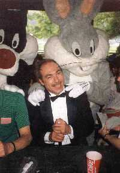
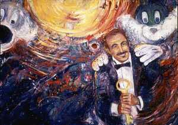

|
DHCP's greatest tragedy occurred on November 26, 1989, when Michael Distaso, and his partner, Keith Orner (of InterSystems Corp.) died at Point Reyes, California. Two days later, when the accident was discovered, Ingeborg Kuhn, Michael's supervisor, sent a message out to the VA's FORUM electronic-mail system. The message and its responses remain a testimony to the tragedy. |
 |
INGEBORG KUHN It is with deepest sorrow that we have to let you know that Michael Distaso died over the weekend as a result of an accident at the Point Reyes National Park. It appears that he was trying to help his friend Keith who was in danger on some cliffs at the sea shore. We believe that Keith too is lost. We loved him dearly, he will be missed.
Response #1: GABER,ROY Sincerest condolences to the friends and family.
Response #2: WILLIAMS,LARRY Ingeborg, I am at a loss as to what to say... I am sitting here in shock. Please express my deepest regrets to everyone there and let me (us) know what we can do from here. All of us have suffered a great loss.
Response #3: HARVEY,JULIE S Zach was an energetic, brillant, original and everyone who met him came away with the same impression. I have always held the belief that at times like these flowers and testimonials always consoled the sender more than the receiver. It would be nice to see those energies channeled into something that could impact others as much as Zach did us. In the days to follow, when heads and eyes are clearer, I would be interested in learning of a charity or fund that Zach felt deeply about. I think an audience this large could make quite an impact. Some things will never be the same.
Response #4: CHOU,JULIUS I don't know what to say but some thing will never be the same. I like to second Julie's suggestion. His contribution to DHCP will never be forgetten.
Response #5: LUSHENE,BOB They say that life goes on ... but Michael brought an intellectual honesty, a forthrightness, an ability to make peace among warring factions that no one else in DHCP is quite able to do. He represented an ideal for some of us .. an idealist in a political jungle where idealists don't usually fare too well. XAK was in the middle of some of the most important things he had ever done. Maybe, someway, somehow, we can pay our greatest tribute by contining to steer the steady course he outlined.
Response #6: SOKOL,EUNICE We who were fortunate enough to attend MUG in New Orleans will never forget OUR clown, who led the parade down to the wharf. The man was most unique. DHCP has lost someone very special!
Response #7: DAVIS,JACOB There are no words to express the shock of such a loss. I remember Michael as being full of life. Julie's idea would be a wonderful tribute to one who contributed so much...
Response #8: THOMAS,SKIP Mere words cannot begin to express the depth of our collective loss.
Response #9: PIPER,NEIL I am deeply sorrowed by Zack's death. I remember his brilliance, his quick wit, his good nature, his smile and his laugh. I was extremely impressed by his ability to think quickly and rapidly find solutions. He was a man who touched the lives of everyone he met. He will be missed.
Response #10: KLAVOHN,RON Words are not enough at times like these. Life is always in a constant state of change and he will be MISSED. I also like Julie's suggestion. If we can be of any help, let us know.
Response #11: FOSTER,WILLIAM No words can express the loss..........
Response #12: BAKER,ROY All of XAK's friends here in Dallas are shocked and saddened by this news. He will be remembered fondly by all of those who came into contact with him.
Response #13: DEL SOTA,MICHAEL XAK was such a nice man, he took me under his wing and taught me so much. The little time that i spent with him will be cheerished forever. A great loss has come to DHCP. I also agree with Julie's idea.
Response #14: LEAHEY,CHARLES A great loss to all. VA meetings, MUG conferences, and the MDC meetings will not be the same without Michael and his special charm and insight. I also agree with Julie's idea.
Response #15: BATES,MARINA Words can not express the profound sense of loss that the Chicago ISC as well as the whole of DHCP is experiencing by this news. May in this time of sorrow, all of us remember the leadership and joy that Xak brought into our lives.
Response #16: CURTIS,CLAYTON All of IHS grieves with Michael's friends in the VA. Those of us who were personal, in addition to professional, friends of XAK's are saddened beyond words.
Response #17: TUCKER,NANCY The Salt Lake ISC sends its condolences and deepest sympathy. We are all shocked by the news of this terrible tragedy. Please let us know about charitable contributions/flowers or whatever is deemed appropriate. We are so terribly sorry.
Response #18: ROTH,TERRY ALAS! THAT SPRING SHOULD VANISH WITH THE ROSE-- THAT YOUTH'S SWEET SCENTED MANUSCRIPT SHOULD CLOSE. THE NIGHTINGALE THAT IN THE BRANCHES SANG, O WHENCE, AND WHITHER FLOWN AGAIN? Ingeborg, Hans, Tami, Linda--my heart is with you.
Response #19: IVEY,JOEL Our loss of XAK will be felt by all that knew him. He impressed people in a lot of different ways, but always on the good side. Zach may be gone, but in us still lives within, Death takes not what was, only might have been.
Response #20: HAUCK,MICHAEL The words and thoughts of Julie, Neil and the rest express my feelings better than I am able. Alas, a good friend and one of our best is with us no more.
Response #21: CUTHBERTSON,TERRY We too are in shock. What a tragedy. Its so hard to lose a good friend. Please keep us informed on how we may contribute to some special memorial for Zach.
Response #22: ANETRELLA,LOUIS J THE NORTHPORT RMEC SENDS ITS DEEPEST CONDOLENCES TO ALL HIS FRIENDS AND RELATIVES.HE WILL BE MISSED GREATLY.
Response #23: ROBINSON,EUGENE Those of us here at William Beaumont Army Medical Center send their deepest condolences to his family and friends. Perhaps those who are planning the next MUMPS convention, might consider dedicating the convention to Mike.
Response #24: SORAOKA,DANIEL T We have always received the best and fastest solutions with a bright and cheerful attitude which was full of creativity and wit. Honolulu expresses our deepest condolences on such a great loss.
Response #25: TIMSON,GEORGE Like Shakespeare, whom Michael so revered, he taught us through Comedy, and now through Tragedy, what life is about. By his example, he showed us what our life could be, and what our work could accomplish, if we treated each person as someone to be interested in, each moment as one to relish, each task as one to be performed to the absolute best of our abilities. As Bob Lushene said, he was truly an idealist. He stuck by his principles, always, especially the principle that phonyness and pompousness should be, at every opportunity, subverted by honesty and glee. There are some people who think that I was Michael's mentor. The truth is that he was mine. I will always be grateful for the opportunity of knowing him and working with him in the VA. I join with each of you in your sorrow, and in your celebration of his memory. "Now cracks a noble heart. Good night sweet Prince, And flights of angels sing thee to thy rest!"
Response #26: JOHNSON,SYLVESTER No words can express the deepest of regrets for a man who forged the streams of deepest dispair to accomplish so great a task as Fileman. As I finihed teaching my last class of fileman at this site, I marvel at the unique of the package construction because I have worked with many database and just as many systems. I founded a confidence and a comfortable zone in working with the complexity of it's simplicity. My heart weeps for the family and friends whom have had personal contact with Michael. May his talents not be forgotten but remembered with the greatest of easy as we seek out his thougt through fileman.
Response #27: MOODY,SUSAN The Dallas ISC wishes to contribute toward whatever is decided from Julie's suggestion. We are also planning to send a card to his family as soon as an address is available. Although I did not know him as well as the rest of you, from the many stories of co-workers who knew him and the many times I answered the phone and it was him calling, he seemed to be a wonderful person. He will be missed by everyone whose lives he touched.
Response #28: SWATZELL,ROY In the 9 years of DHCP many great champions of this cause have come and gone, but this loss may be the greatest! We shall all miss him greatly.
Response #29: AUCHMOODY,RICHARD If you are interested in sending a card to Michael's family, the address is: Mr. & Mrs. Vito Distaso 1128 W. Ramona Road Alhambra, CA 91803
Response #30: WEISS,LINDA W My condolences to those of you who were Zach's extended family in DHCP. As a clinical person, he was always most patient in his work with those of us who weren't in the IRM know and helped us to develop some outstanding products. I remeber a dinner in Boston where Zach and Keith taught my son and I the proper way to eat guacamole which was to intersperse mouthfuls with famous quotes. It is amost fond memory and we were fortunate to have had such a gift from both. I would like to participate in any memorial arrangements also.
Response #31: SEEGER,ANTHONY THIS MAIL MESSAGE HAS TOUCHED DEEP CORDS WITHIN MY PSYCHE AS WELL. I hope that Mike can read this mail message so he can understand just how deeply he will be missed here on earth. I will remember him every time I DO P^DII, THANKS MIKE FOR THE VISION, I WILL LIGHT A CANDLE IN YOUR MEMORY.
Response #32: GRAY,JAMES What a shock. Others have said things much better than I could. He will be missed dearly.
Response #33: LILLY,MAUREEN The loss of Michael has left us with a void both personally and professionally. In his role as a newly-elected MUG Board member, his enthusiasm in representing MUMPS users had just begun. But Michael had been a strong advocate of MUG for many years. The MUG Board and staff will always be grateful for his steadfast support and will cherish our memories. In an effort to perpetuate Michael's love of MUMPS, the MUG Board of Directors has decided to establish a memorial fund. Specific details will be discussed the our December Board meeting. If you have comments on the memorial fund, they will be passed on to the Board in time for that meeting.
Response #34: HOFFMAN,JOHN George beat me to the quote mentioned above. I offer another quote from the bard: "Tell me where is fancy bred, Or in the heart or in the head? How begot, how nourished? Reply, reply ..."
Response #35: LILLY,MAUREEN The loss of Michael has left us with a void both personally and professionally. In his role as a newly-elected MUG Board member, his enthusiasm in representing MUMPS users had just begun. But Michael had been a strong advocate of MUG for many years. The MUG Board and staff will always be grateful for his steadfast support and will cherish our memories. In an effort to perpetuate Michael's love of MUMPS, the MUG Board of Directors has decided to establish a memorial fund. Specific details will be discussed at the December Board meeting. If you have comments on the memorial fund, they will be passed on to the Board in time for that meeting.
Response #36: RICHARDSON,CHRIS We at US Public Health Services, will miss Michael dearly. He will be sorely missed. Personally, the MDC will not be the same without him.
Response #37: SANSOM,TERRY Although I was not personally acquainted with Michael, I feel a deep loss at his passing. I probably would not be where I am today, if it had not been for his assistance in the early 80's. Each time that I teach a FileMan class in the future, there will be a feeling of a great loss & extreme reverence for him. My condolences to his family & many friends.
Response #38: KREIS,GREG Since the news of Michael's death I have been experiencing the short 'clips' of special moments with Michael, as many of you also have. They seem to come of their own accord and they make the burden a little lighter at times. I though I might share a few.... I remember laughing on the phone so hard, that we both felt compelled to close our office doors to avoid disrupting others. I remember the time Michael gave Roy Swatzell a load of verbal buckshot, by accident, that was meant for me. I remember his frustration at the politics that ran counter to what he knew was the right thing. I remember that Michael ALWAYS let you know where you stood with him. If you knew Michael well, you came to appreciate his rugged honesty, even though sometimes it smarted, it was often needed. I remember how he somehow fancied the title given to him of the 'little dictator'. I remember riding in a car with Michael as the driver ! I remember looking over at him as he looked in the rear view mirror and knowing that he must have pulled out in front fof a Mac truck ! His eyes were as wide as saucers. I remember how I could never fill his shoes when I was given pharmacy and how he had such an effective way to make progress no matter what was going on around him. I remember the early pharmacy SIUG meetings and seeing how much they appreciated his hard work and dedication. Oh Michael, we miss you so much already. I am sad that I have had to shut my door for the last time....
Response #39: DEMOEL,ED It's not just in the US that Xak will be missed. The little contact we had with him in Europe was cordial and pleasant. Condolences to those he left behind.
Response #40: WERNERS,MARCUS I am sitting in front of my computer and cant believe it. He was with us in January here in Berlin. No words can express what we feel now. The "Deutscher Evangelischer Kirchentag" has lost a friend. I personally will never forget the clown. If I could do anything to help those who worked with him let me know.
Response #41: SCHADLE,KATHY Xak, you may be physically gone from our lives but you will never be forgotten. The mere touch of a computer key will keep you always in our thoughts. IRM staff from Tampa, Fl.
Response #42: WRAY,CECELIA A Stop, listen...can you hear Michael laugh? Remember that, because it is only one of the most precious gifts he left. The memory of his laugh. My sincerest sympathy to all his family and friends.
Response #43: CLARKE,CHRISTOPHER May the Blessings of God rest upon you May His Peace abide with you May His Presence illuminate your heart Now and forever more.
Response #44: MEEHAN,DON I speak for the entire IRM staff at Richmond in expressing our deepest sympathies. Michael will be remembered for much more than his brilliant contributions to what we all do. He touched each of personally, and taught us to not take our jobs, our organizations, our lives too seriously. Forever more, whenever I'm up against it, I'll remember that laugh, that clown...and I'll smile. Goodbye Michael, and thank you.
Response #45: ROTH,TERRY I think the most effective and lasting memorial to Michael would be: 1. Develop an effective Bullshit Detector and USE IT! Call a spade a spade. 2. Be tolerant of those who march to a different drummer, and let people know exactly where they stand with you. 3. Don't engage in whining about the system--roll up your sleeves and get the job done. Do the best you can: work hard, love hard, and laugh a lot, especially when things get grim.
Response #46: WAGNER,STEVEN When Zach talked about death he always said "I don't want to die old.". With his youthful exuberance and outlook on life I don't think he would have died old even if he lived to be one hundred. I will miss him deeply and often. One thing that consoles me (and perhaps others) is that I really believe I will see him again in the hereafter. His smiling, animated face and his great laugh. Another consolation, as Greg said, is the great memories of the times we shared together. There is a sonnet from Shakespeare that expresses both my current feelings (in the first few verses), and the way I am sure I will think about Zach in the coming weeks or months (in the last verse). There is a very deep sense of loss now, but I believe that the memory of him will turn my thoughts into something very positive when I think of him in the future. When to the sessions of sweet silent thought I summon up remembrance of things past, I sigh the lack of many a thing I sought, And with old woes new wail my dear time's waste: Then can I drown an eye, unused to flow, For precious friends hid in death's dateless night, And weep afresh love's long since cancelled woe, and moan th' expense of many a vanished sight. Then can I grieve at grievances foregone, And heavily from woe to woe tell o'er The sad account of fore-bemoaned moan, Which I new pay as if not paid before. But if the while I think on thee, dear friend, All losses are restored and sorrows end. My deepest regrets to his relatives and to his family of friends.
Response #47: BOTTINI,STEVE >From my humble perspective, Michael was a light that illuminated everyone who knew him. Judging by these responses, his light will burn forever. We have truly been blessed.
Response #48: DIAMOND,JON I too was touched by him. He was the clown of our community and we will never forget him.
Response #49: HIRZ,LEE I read a science fiction story once about a world in which a method had been perfected that offered people immortality by creating matches between individuals such that if one had a match, his 'soul' would upon death migrate into one one of his living matches. The 'dead' person would exist at first in the 'living' persons mind, then gradually the personalities would merge till the remaining personality was a hybrid of the two. And so people found great comfort that something of them would live on, if they had a match. But reality is often not so far from fiction. It seems that Xak had a lot of matches. Last time I saw him he had brought me a Giant Sequoia from San Francisco. I think I'll name it Xak.
Response #50: WINN,TAMI I have tried so many times to respond to this message but it's so hard to find words for what Michael and Keith both meant to me. I remember so well the first time I met Michael. I just thought he was one of the most fun people I'd ever met and I knew we'd be friends. When my husband and I moved to San Francisco from Boise, Idaho, he turned a big scary city into a warm and loving place for us. He and Keith took us all over and told us the good and bad parts of town, and even went apartment hunting with us. We lived close to Michael and Keith, and went out with them often. They were our friends and neighbors. I was going to start work on Fileman with Michael in a few weeks, and I could hardly wait. I wanted to much to work with him. I've rarely met a person I respected so professionally. I know I could have learned so much from him. Now we'll just have to stumble through as best we can. We'll try our best to live up to his standards of excellance.
Response #51: WINN,TAMI Michael, I'm going to miss you. You were a light in my life and I loved you.
Response #52: SEHON,GEORGIA Although I did not know Michael as well personally as many of you did, I did know his work and admired his talent. I too teach Fileman classes and will always think of him as I continue to teach future classes. My prayers go out to his family and friends. His talents will be dearly missed.
Response #53: HOLMBERG,JOHN As has been stated so many ways - Gone, but never forgotten. You will be greatly missed, Michael.
Response #54: MUNNECKE,TOM I, too want to express my sorrow, but want to speak of something gained. There would not have been this outpouring of sentiment if we had not all felt a sense of gain from Michael's contribution to our lives. This gain does not magically stop with his passing. He was incredibly energetic, spending little energy resisting his passions. People always knew his opinion on a subject. He had a stong inner sense of where he was going and how to get there, and it was through this inner strength that he had such a powerful effect on the community. He had the ability to focus intensely on a specific problem, and he was intuitively drawn to the most significant problem. If he were here now, he would probably show up in his clown outfit and say, "Don't be so sentimental. Get on with what you were doing." We can all look to XAK as an inspiration for what an individual can do in a community by following their inner strengths. This is what should be savored in this time of loss.
Response #55: BOYDEN,GEORGE MICHAEL CAME TO THE VA FROM RIVERSIDE COUNTY DP. I ADVISED THEM OF OUR LOSS AND THIER EXPRESSIONS REFLECTED THE SAME LOVE AND HIGH REGARD AS SHOWN IN THE ABOVE REPLIES.
Response #56: HARVEY,JULIE S I first met Zach in the back seat of a Thunderbird in 1983. His electricity scared the hell out of me. Verifying File Manager has been the most terrifying part of my job over the years. Verifying for Zach was the most exhilarating. The faith he placed in me put pressure on me but he was always there for reassurance and gave me great opportunities to learn from him. I've been blessed in sharing his world. He flattered me by letting me in. I will miss our crazy calls, his uncontrolled laughter, his ranting and raving about how things should be. Thank you Michael for letting me believe that I could be what you said I could be. And thank you for getting me there.
Response #57: SCHALLOCK,MICHAEL Michael always treated us like we were just part of the family. We miss him, too, both as friend and colleague.
Response #58: KILMADE,MIKE Oh Michael, this is so sad. It hurts so much. My mind says you're gone but my soul still wants to dial the phone and hear your voice. I know this hurt will ease in time. But right now, I mourn. I think of all the things we did together. I think mostly of our friendship and our late night calls. Just talking. Soon my little Joey is going to ask to call his Godfather and I'm going to have to make something up. He won't understand. (I don't even understand.) 'For A Dancer' Keep a fire burning in your eye, pay attention to the open sky, you never know what will be coming down. I don't remember losing track of you, you were always dancing in and out of view, I must have thought you'd always be around, always keeping things real by playing the clown; no you're nowhere to be found. I don't know what happens when people die, can't seem to grasp it as hard as I try. It's like a song I can hear playing right in my ear that I can't sing, I can't help listening. And I can't help feeling stupid standing 'round, crying as they ease you down, 'cause I know that you'd rather we were dancing, dancing our sorrow away no matter what fate chooses to play. Just do the steps that you've been shown by everyone you've ever known until the dance becomes your very own. No matter how close to yours another's steps have grown, in the end there is one dance you'll do alone. Don't let the uncertainty turn you around. Go on and make a joyful sound. Into a dancer you have grown from a seed somebody else has thrown. Go on ahead and throw some seeds of your own. And somewhere between the time you arrive and the time you go, may lie a reason you were alive but you'll never know. (Jackson Browne) Goodbye, dear friend.
Response #59: GINSBURG,RON I feel very sad reading this message of Michael's untimely and tragic death. In the early days before DHCP I remember his kindness and patience when trying to show the virtues of Fileman to the skeptics. His DHCP package reviews and Fileman classes were superb learning experiences done with raucous laughter and unabashed enthusiasm. I will always remember Michael's many endearing qualities that made him a truly unique, delightful, and lovable person. His contributions to DHCP and the MUMPS community were outstanding. Good-bye Michael, I'll miss you.
Response #60: TANOUS,TERRY '... winter came along and you were not around ...' I first met Michael six years ago. A couple of years after meeting Michael I lost a close friend, whose absence created a void from within. But then there was Michael, a character among characters who managed to help fill that void. I remember his laughter, impish expressions, and most of all the sparkle in his eyes. I knew about living - and losing - and appreciated Michael's love for life because of it. Michael exuded life to others around him. I always wanted to thank Michael for being him, but like my friend, I always thought that there was time. With a heavy heart I wish to express my condolences to his family and friends. May Michael and Keith find eternal happiness. Thank you, Michael.
Response #61: ROY,JERRY Irreplaceable. Absolutely irreplaceable, not as a colleague (which he probably is) but as a friend. Someone who was there during the good times and especially the bad times. He was there when you just needed a lift when feeling down. And he was there to lend support and courage during the illness of a loved one. Michael had a way of accentuating the positive. I told him not too long ago that I always felt so much better about myself and life after being with him. I'm fortunate because I realized he was special long ago, and cherished the times we had together. I'll miss him forever.
Response #62: RUH,LARRY I received the news of Michael's demise from the Forum Postmaster at church this past Sunday. I was shocked and sorrowful that the spirit of one so full of humor and life was now removed from us. May we all remember his forthrightness and eye for the absurd. "The spirit forms an unbroken thread from creation in two dimensions. Outward to the limits of imagination and inward to the heart of each individual."
Response #63: VONBLANCKENSEE,HANS What a unique, wonderful man! I take some comfort from the belief that Michael understood (in an off-handed way) how important he was to all of us, and how much so many people loved him.
Response #64: MALMROSE,CARY Michael, where are you? We're not done yet. Is this just another one of your mascarades? I keep hoping, in the back of my mind, to sign-on and see you reply to all of this. I guess your reply is in each one of us. Michael...thank you for being fair, for rising above the contemptuous ...thank you for sharing ...and especially, thank you for caring enough to look beyond and help each of us to feel important. ..."until we meet again"...
Response #65: BADER,ED Time will heal the deep hurt and sorrow I feel, but the memory of the many good times, your laugh and wise counsel over the years will live with me all of my days. Thank you Xak for these gifts which transcends all time. You were the Clown of Clowns!!!!!!!!!!!!
Response #66: MILLER,CHYLTON If FORUM can in any way be compared to the National Inquirer, then XAK is its Elvis. XAK, like Elvis, lives! In each of us... Thanks for the memories.
Response #67: VAN-HOOSER,DAVID It is with deep sadness that I say good-bye to our good and true friend. His passion for living led him over many trails. I rejoice that our paths crossed. There will never be a happier clown. Thank you for your friendship and caring. May God be with you Michael Zachary.
Response #68: LEACH,MARSHALL It's been a week now and I still find it hard to find the words to express what this wonderful person meant to me. They say that over time hurt will heal and things will get back to normal. Well I think we've found the exception to the rule in XAK. He is truly one person who is irreplaceable and the hurt will be felt both personally and professionaly for many years to come by all who were fortunate enough to come in contact with him. Yes, he will be greatly missed but we are more fortunate than those who never knew him because we have the memories. No, I won't say good-bye to XAK because he's not really gone. His laughter will ring in my ears for many years to come and everywhere I turn I'll continue to see his influence. I can see XAK now convincing St. Peter to let him automate the entry procedures to heaven in this wonderful language called MUMPS. You can call MUMPS anything you want but, for the many people like myself who wouldn't be where we are now were it not for Michael, MUMPS will always be XAK. In my estimation no one person has given more of him/herself in promoting both the product and the people. You'll always be with us XAK ... till we meet again ...
Response #69: MCDONALD,GERALD A comment by Michael at MUG N.O.: MUG is a great opportunity for all us BS'ers to get together and hear all the BS that's going around. You know, I kinda wondered if he was referring to my trying to BS my way through a short discussion with him on FILEMAN?
Response #70: HOYE,MAUREEN This is so hard to write, I've been waiting to hear this was a mistake. Working with Michael has been the most difficult, frustrating, challenging, rewarding, and fun experience of my career. I am grateful for that opportunity, he helped me so much. I will miss him every day. There really were times when he was on the phone, laughing so hard he had to close his door. His laughter penetrated to walls and I wondered how I would concentrate. Now the silence is deafening. Michael and Keith were part of our extended family. Ski trips, birthday parties, races, holidays, exchanging 'prizes', all were brighter because they were there. My husband and I are grateful for the many, many, wonderful memories. They were two bright stars in our lives. We loved them and will miss them dearly. Goodbye Michael Distaso, goodbye Keith Orner.
Response #71: DOLAN,BOB What a shock! The loss of Michael will be surely felt by all of the IHS, he was a personal as well as professional friend. Thanks XAK for all you did for the Indian Health Service. Goodbye Michael, Good luck in your next life.
Response #72: SCHLEHUBER,CAMERON I've never had a message so hard for me to respond to. The emotion is almost overwhelming. I remember meeting Michael for the first time some years ago (Before DHCP). The exact location I don't remember, but I do remember Wally pointing Michael out to me. He was standing in a broad lobby, very purposely stepping forward, to the side, and back, obviously very deep in thought, in a world of his creation. I walked up to him and asked how much he was involved with Filemanager ... Another time, probably half as many years ago, I quite unexpectedly provoked a remarkable outburst (even for Michael). I thought the glass might break on the wrought iron table as he clambered across it yelling "You know users will change it!" Michael would sometimes reminisce that it was one of two times that he was furious beyond control, but he didn't remember what it was that made him so mad. I never reminded him. And there was the moment a couple of years ago at a dinner party where as usual some small, innocuous items were being projected across the table. The conversation had become somewhat stuffy and heavy, and while several knotted napkins had been lobbed gently back and forth, some of us continued to (try to) ignore the frivolity. After a quick motion in my peripheral vision I glanced and ducked just as a more vigorously thrown napkin missed me and hit David Van Hooser. Michael helped us all be so much more human while we were working so hard. I could imagine Michael receiving a Nobel Prize, if they gave one, for integrity. He could have even taught Richard Feynman a few things ... There are those who say Michael was present at the Creation and assisted with it. Indeed he was. Perhaps (I hope I'm not being sacreligious) our era will be divided by the designations BD (Before DHCP), and AD (After Distaso).
Response #73: MEIGHAN,MIKE There will be a brief memorial for Xak's Seattle area friends on the 12:15 PM Winslow ferry on Monday December 11th. We'll meet on the passenger deck, forward, on the starboard side.
Response #74: HOFFMAN,JOHN Keith, Xak, and most of the staff here engage ourselves in] a constant game of competitive quotations. Xak challenged me to find the 'No Man Is An Island.' poem. Well, it's not a poem. John Donne, 1623: . . . The bell doth toll for him that thinks it doth; and though it intermit] again, yet from that minute that that occasion wrought upon him, he] is united to God. Who casts not up his eye to the sun when it rises? but who takes off his eye from a comet when that breaks out? Who bends not his ear to any bell, which ypon any occasion rings? but who can remove it from that bell,which is passing a piece of himself out of this world? No man is an island entire of it self; every man is a piece of the continent, a part of the maine; if a clod be washed away by the sea, Europe is the less, as well as if a promontorie were, as well as if a Mannor of thy friends or of thine own were; any mans death diminishes me, because I am involved in Mankind; And therefore never send to know for whom the bell tolls; It tolls for thee. Neither can we call this a begging of misery or a borrowing of misery, as though we were not miserable enough of our selves, but must fetch in more from the next house, in taking upon us the misery of our neighbours. Truly it were an excusable covetousnesse it we did; for affliction is a treasure, and scarce any man hath enough of it. . .. . .
Response #75: GIGLIA,ELLEN I've started writing this message countless times. And each time I have stopped because the emotions I feel cannot be expressed adequately with words. They require tears for the sense of loss I feel. Words cannot replace the need to hug and hold those who remain - to reaffirm the bond that we feel for each other - to comfort the body as well as the mind. There must be laughter, and dancing, and a drink (or two) to toast the joy Xak and Keith brought to us all. To Michael and Keith, Thank you. You made my life so much richer. I'll miss you both. Love, Ellen
Response #76: ACKERMAN,TOM This is a great LOSS to the MUMPS Community as well as the VA. We will miss Michaele's smiling face at the MDC meetings. My deepest regrets to his relatives and many Friends.
Response #77: AUCHMOODY,RICHARD I have read all the wonderfully eloquent and poetic rememberances of Michael. They have made me laugh. They have made me cry. There is very little that has been left unsaid. But, this past week I have felt like something has been missing. I now know what it is. I miss Michael's laughter. I miss his energy. I miss his honesty. I miss his integrity. I miss his clown suit. I miss his sailor suit. I mis his red sneakers! I miss you Michael. God be with you and Keith.
Response #78: FORT,WALLY Good Bye Michael, We all will miss you. Love wally
Response #79: DIVERS,JACK On behalf of the DEC-16 class in Chicago, even though there are some here who did not know you personally; I, as their evaluator and spokesperson, dedicate this class and it's performance and future progress to your memory. You were special.
Response #80: MILLIGAN,LLOYD I am deeply saddened. As others have expressed more eloquently, Michael was uniquely brilliant and uniquely human. Our consolation is an enduring gratitude for his life and irreplaceable contributions.
Response #81: JONES,RICK You just do not know what to say. What a GREAT loss! Michael's contributions have made DHCP what it is today. His hard work, dedication, professionalism, ideaes, honesty, laugther, etc. will always be remembered. He has taught me alot! When I here of MUMPS, I will remember Michael. When I here of FileMan (DI) I will think of DIstaso. You will be missed
! Response #82: MCARTHUR,JAMES All of us in the IHS share in the sense of personal loss in the death of Michael. He will be missed far beyond the walls of the VA.
Response #83: SCHLUEDERBERG,SUSAN I have been postponing this reply, first due to shock, then due to the inability to capture my feelings in words. Goodbye Michael. We all will miss you - the laughter, the honesty, the champagne toasts. There has been comfort and joy in reading the rememberances of your other friends. It seems to me that there is a commitment to keeping the spirit/hope/zest of your life alive among us, and that makes me smile.
Response #84: LINK,CHARLES This is only the umteenth time I've started this reply. I've only known Michael a few years, and probably not that well. I dare not try to imagine how those of you who have known him longer must feel, but my heart goes out to you the most. When I'd get to go to a meeting, one of the first things I'd want to know was if Michael was going to be there. The latest thing was going to baseball games and then giving him a rough time when his Red Sox lost. (Damnit Michael! You were supposed to take me to Fenway!) What Michael couldn't have known was how much I learned from him, about people, how he treated others. He might be surprised at the attention I paid when he talked. Since I can't make it to San Francisco, I hope to meet a lot you soon (maybe at MUG) and spend at least one evening to regale in Michael tales over beer and Wild Turkey. (I know how and why the infamous "Napkin Massacre" got started.)
Response #85: KUHN,INGEBORG Michael, It was a Joy to know you and to work with you. It will be a Joy to remember you. Good-Bye Ingeborg
Response #86: MCINTYRE,MICHAEL Zack, I still have some questions about fileman that I wanted to ask you... I'll miss you at MDC especially since we're having it at your place this time. Thanks. -Mike Mc
Response #87: MASHBURN,JAMES Dear Michael, I promised to never yell at you again, and I still won't; Dear Keith, goodbye fellow "twin", we still need to spend more time together.
Response #88: SALANDER,THOMAS Each day, I sign on and there is more to remind me that Michael is gone. I had begun to dread the message "XAK". Michael was insidious; he dug into my life, and my heart, and I never knew, until he was gone. Every time, more rememberances, the wound re-opened. Oh, Michael. But all these friends... Michael, can you see this, all this love? All these lives, touched with your smile, your laugh? Oh, your laugh. So many still hear your laugh. It shouldn't make me cry. There should be comfort, here. Knowing that others also geave. Other lives, missing so much. This isn't like you, Michael, leaving untied threads. But we tell each other that, yes, I miss him too. And we forgive you. We can't help ourselves. We loved you. With such a large family, Michael, with so many that love you, that hear your laugh, hear your insight, integrity, and joy, with all this, Michael, you haven't died. You're still here, and you'll be with us for a long, long time.
Response #89: FERRY,DONALD Michael, I never knew you that well but was always in awe of your abilities. I was even more impressed by your humanity. You could come up to a site manager like myself who was feeling pretty lost at a MUG meeting and make him feel like he belonged there. Of all the gifts a man may have love is the greatest and God knows you had that in abundance. To those of you who worked with him and to his family please accept my sympathy and always remember how much he was respected and loved. So long for now XAK.
Response #90: KREIS,GREG I have looked over this message from the beginning and a curious thing has happened. This message started out so sad and was addressed to us. During the responses the tone changed as we remembered the wonderful times and how much Michael had been the reason for them. Tom Salander said it best when he mentioned how he did not know how much Michael had been a part of his life. I think all of these responses point this out. Now, the message seems to be to Michael ! We are telling him how much we loved him and appreciated his company. They are right! He is alive and we are talking to him as if he was right next to us. I will cherish this message for a long time. I have felt isolated during this whole ordeal, except for FORUM which has made it possible for me to be with so many friends I know and those I did not know I had, but for Michael. What a glorious way to come to grips with this tradegy and to have it somehow triumph by bursting into a celebration of someone so special. Thank you Michael. Even in death you have warmed my heart as you did in life.
Response #91: ALEXANDER,DAVID A man who had his head so high in the clouds that he knew where we should be five years from now. A man who had his feet so firmly on the ground that he knew what we had to do today in order to reach that goal. A man with so much joy that he could guarantee that we would have fun every step along the way. Good night, Michael. I hope I will see you again.
Response #92: FICEK,MARK Michael, I cherish my memories of you. And now I also have the collective memories to cherish--memories of all those who knew you and love you. You live on in our hearts, but I guess that's mainly for our own consolation. I can almost hear you saying, "C'mon, cheer up, you guys!" Until we meet again.
Response #93: ANDRUS,RUSTY Michael, thank you for enriching my life and constantly challenging me to grow professionally and personally, I will miss you, but rejoice in knowing we will meet again. Love, Rusty
Response #94: STANLEY,MILTON " I burn my candle at both ends, It cannot last the night. But oh my foes, and Ahh my friends, It gives a lovely light" The passing of Michael has touched many hearts, as evidenced by the noble and moving sentiments expressed here. However, although gone, the light from his passing still shines as he was part of a movement that continues to walk down a path made brighter by his presence. My condolences to the family and friends. Milton Stanley
Response #95: LALIBERTE,DAVID I have to close the door to my office everytime I read the responses to this message. I feel very sad about this tragedy. Michael was truly a remarkable person in every way. I will never forget the moment when this guy from the back woods of Maine went up to him and asked for his autograph because he found Michael to be so awesome. Michael said very loudly 'you want my autograph?'. He laughed and autographed the Filemanager Techinical Manual that I was holding. I will forever treasure that moment and the support he gave us here in Togus, Maine in the early days of DHCP. I still have his autograph and guard that manual with my life. Hope we meet again.
Response #96: KUHN,INGEBORG It was a sad and happy occasion when Michael was given the Top VA IRM award at the IRM conference a couple o weeks ago. The Award was presented by the Assistant Secretary for IRM, Mr. Lewis. David Van Hooser accepted the Award for Michael. The award was in recognition of Michael's outstanding contributions to IRM for the VA. This is a new annual award, Michael was the first to receive it.
Response #97: KUHN,INGEBORG I received a note from Mrs. Distaso, Michaels mother, it contained the following: Thank you for sending me as well as to all my family the responses you received over the news of Michaels's death. (A copy of this message) Many thanks to all of Michael's friends and co-workers for their deep sympathy and condolances to his family, as well as the flowers, cards and letters. Thank you The Distaso Family P.S. As a last request please tell everyone to remember Michael laughter, clowning P.
Response #98: KUHN,INGEBORG Sorry - Forum zapped me.... P.S. As a last request please tell everyone to remember Michael with laughter and clowning. As I know in my heart he would like to be remembered that way. (I expect we have already begun to do that!)
Response #99: READ,CHRISTOPHER after all these weeks I still haven't gotten to read all the responses to the end! I've heard the party was wonderful and wish I could have been there. I hope someone has that laugh on tape . . .
Response #100: OPSTAD,BYRON Time is the great healer...as others have said it was difficult to respond to Ingeborg's initial message. We in Mpls will always remember the long hours working with Micheal ie 2-3 AM,pick him up at 6:30AM for a flight. a friend gave me this when I lost a brother: "In one sense there is no death the life of a soul lasts beyond departure, you will always feel that life touching yours, that face speaking to you, that spirit looking out of other eyes, talking to you in the familiar things he touched, worked with as familiar friends. He lives on in your life and in the lives of other who knew him. ................. the verse seems so appropriate due to the many fond memories so many of us have of Micheal.
Response #101: SALING,RICK Even now I can't put together a coherent response to tell you how much I miss him. I'm supposed to turn this loss into some kind of strength, but no matter how much I grow from this or try to live up to his memory my life would be better if he were still alive. I will miss him until the day I die. Goodbye, Xak. We will always remember you, and we will always wish you were here. Love, Rick.
Response #102: AUSTERLITZ,CARL WELL IT'S BETTER LATE THAN NEVER. MICHAEL WORKED WITH US AT THE FT. MILEY VAMC, SF, WHEN WE WERE BRINGING THE OP PACKAGE ON-LINE, THE FIRST SUCH BIG VAMC FOR HIM, AND IT WAS QUITE A DIFFERENCE FROM THE INITIAL ACTIVITY AT LIVERMORE VAMC. HE WAS A VERY DYNAMIC ADP PERSON, AND IMPRESSED US WITH HIS MUMPS KNOW-HOW. HE EVEN TOOK A LITTLE BLUE TABLET FROM ME ONE DAY DURING A VERY HEATED DEBATE AS TO WHAT WAS GOING TO HAPPEN NEXT, AND WHAT SUPPORT WE WOULD BE GETTING FROM THE ISC AND THE LOCAL ADP SITE MANAGER. MY, DID HIS MOOD CHANGE...... WE MISSED HIM WHEN HE LEFT TO GO TO BOSTON, AND GOT INTO MANY A CONFLICT AS TO WHO WAS THE MORE CAPABLE ISC OR FIELD SUPPORT ACTIVITY TO TAKE CARE OF OUR NEEDS. HE PREVAILED, AND LITTLE BY LITTLE, B'HAM ISC TOOK OVER AND DID A VERY FINE SUPPORT JOB. BY THAT TIME, I WAS ON MY WAY TO GEORGIA, AND NEVER REALLY WAS IN CONTACT WITH HIM ANYMORE, OTHER THAN MY CONTACTS AT THE SF-ISC. ONE THING THAT WILL ALWAYS STICK IN MY MIND ABOUT MICHAEL WAS HIS WAY OF APPROACHING THIS ADP-MUMPS BUSINESS. AFTER ONE LONG MEETING, HE MISSED THE LAST BUS OUT OF FT. MILEY, AND NEEDED A RIDE DOWNTOWN. I OFFERED THIS AND OFF WE WENT. AS WE WERE HEADING DOWN UPPER MARKET STREET, WE GOT TO TALKING ABOUT WHY HE WAS DOING THIS, AND HE MENTIONED THAT HE HAD TAUGHT HIGH SCHOOL MATH AND WAS BURNED OUT, AND THE WHOLE FIELD OF COMPUTERS WAS A CHALLENGE. HE WENT INTO IT WITH HIS FULL EFFORT, AND THE REST IS HISTORY. I MENTIONED THE PROBLEMS THAT I HAD HAD IN HIGH SCHOOL WITH MY MATH TEACHER AND THE PROBLEMS THAT A LACK OF SUFFICIENT MATH MEANT TO ME, AND THEN WE SAW THE TRANSAMERICA PYRAMID, AND THE REALIZATION THAT HAD SHE TAUGHT IT TO SHOW THE PRACTICAL IMPLICATIONS OF GEOMETRY, ETC., INSTEAD OF THE CONTINUAL MEMORIZATION AND REGURGITATION OF THEOREMS AND SO FORTH, IT MIGHT HAVE BEEN A LOT EASIER TO DEAL WITH.........AND HE SAID THAT IS WHAT BURNED HIM OUT AND MUCH, MUCH MORE THAT WAS REQUIRED OF HIM, WITHOUT HIS BEING ABLE TO BE INNOVATIVE AND CREATIVE WITH HIS STUDENTS. I MISS MICHAEL,AS DO THE REST OF YOU, AND COULDN'T BELIEVE FOR SO LONG THAT HE WAS GONE. HIS SPIRIT IS WITH US EVERYDAY THAT WE WORK WITH THIS SYSTEM. --------------------------------------------------------------------------
| This is vintage Michael. He loved to entertain and the outfit in this photo is appropriate. Michael's work always displayed a touch of class. | In 1991, Augie Turano presented this large
Felicia Turano painting to the MTA office, in memory of Michael.
 |